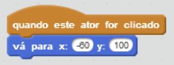
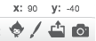
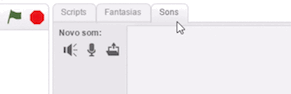
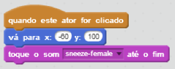
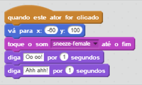

Apresente seu animal de estimação
Mova seu animal de estimação para onde você quer que ele comece.
Use o bloco vá para para definir a posição:


Faça seu animal de estimação emitir um som quando você clicar nele.
Clique na guia Sons, e então clique em 

Adicione um script que reproduza este som quando você clicar em seu animal de estimação.

Você também pode fazer seu animal de estimação dizer alguma coisa quando você clicar nele.

Em seguida, anime seu animal de estimação